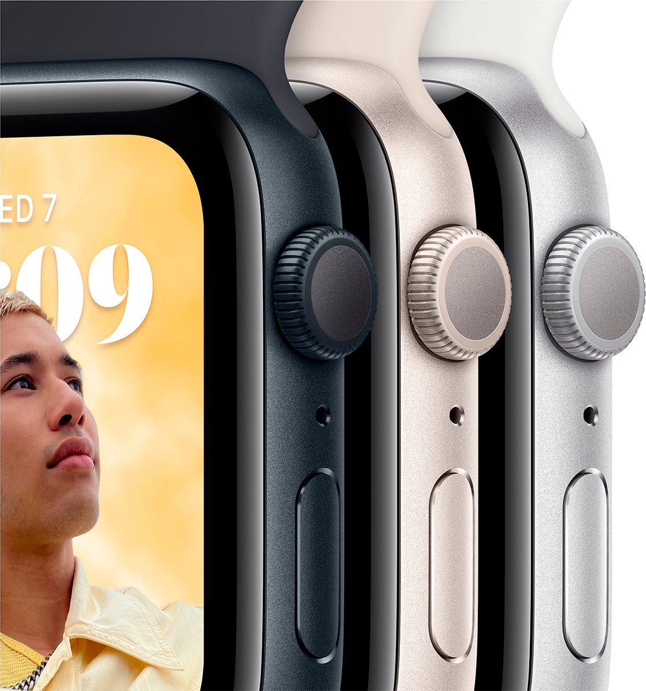
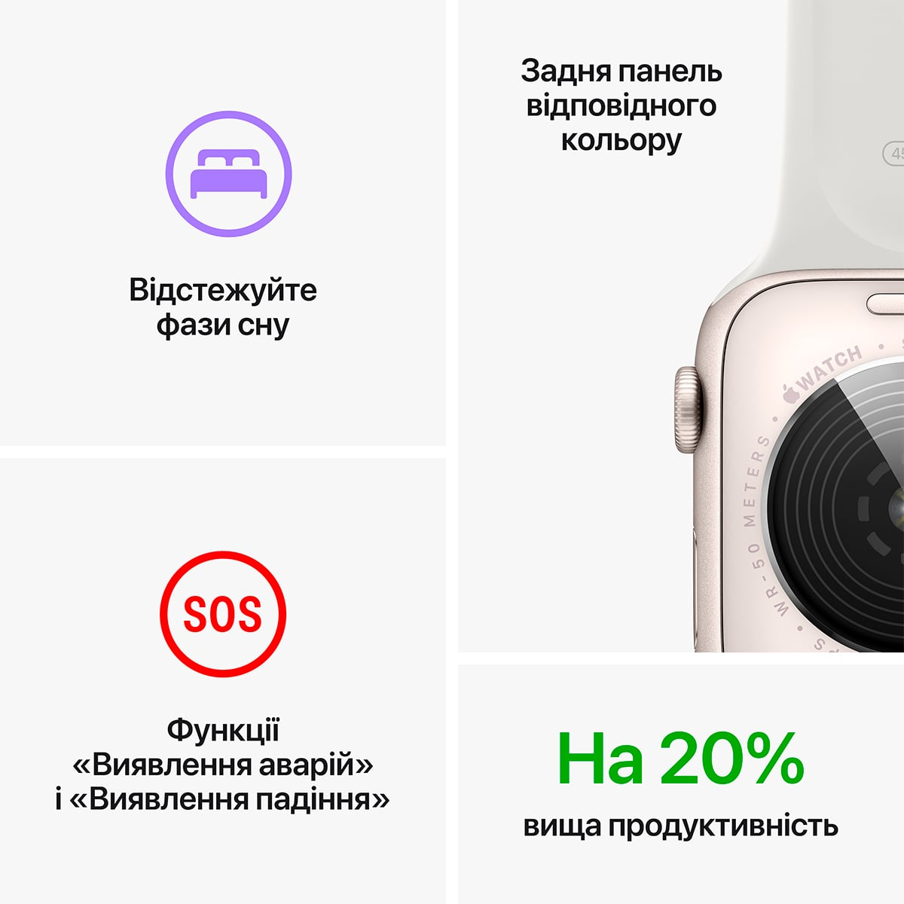

Основні функції для підтримання здоров’я, безпеки й активного способу життя.


Основні характеристики
- Відповідайте на дзвінки та повідомлення просто із зап’ястя
- Отримуйте сповіщення про високий, низький і порушений серцевий
- До 20% швидший за попередній Apple Watch SE
- Слухайте улюблену музику, подкасти й аудіокниги (для використан
- Розширені функції безпеки, зокрема Виявлення падіння, Сигнал SOS і Виявлення
аварій
- Захист від води
- Відстежуйте свою активність протягом дня з Apple Watch, а потім переглядайте
тенденції в додатку <<Фітнес>> на Iphone
- Відстеження сну дає змогу дізнатися, скільки часу ви перебували у фазах швидкого,
повільного та глибокого сну
- Покращений додаток «Тренування» з удосконаленими підходами до вправ
- watchOS 9 підтримує покращений додаток «Тренування», новий додаток <<Ліки>>, фази
сну та дає змогу краще відстежувати ритм серця